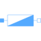
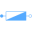

ImpedanceSingle-phase linear impedance |

|
Information
This information is part of the Modelica Standard Library maintained by the Modelica Association.
The impedance model represents a series connection of a resistor and either an inductor or capacitor.

The linear impedance connects the voltage v with the
current i by v = Z*i. The resistive
component is modeled temperature dependent, so the real part R_actual = real(Z) is determined from
the actual operating temperature and the reference input resistance real(Z_ref).
A conditional heat port is considered.
The reactive component X_actual = imag(Z)
is equal to imag(Z_ref) if frequencyDependent = false.
Frequency dependency is considered by frequencyDependent = true, distinguishing two cases:
- (a)
imag(Z_ref) > 0: inductive case - The actual reactance
X_actualis proportional tof/f_ref - (b)
imag(Z_ref) < 0: capacitive case - The actual reactance
X_actualis proportional tof_ref/f
See also
Resistor, Conductor, Capacitor, Admittance, Variable resistor, Variable conductor, Variable capacitor, Variable inductor, Variable impedance, Variable admittance
Parameters (9)
| useHeatPort |
Value: false Type: Boolean Description: = true, if heatPort is enabled |
|---|---|
| T |
Value: T_ref Type: Temperature (K) Description: Fixed device temperature if useHeatPort = false |
| Z_ref |
Value: Type: ComplexImpedance Description: Complex impedance R_ref + j*X_ref |
| T_ref |
Value: 293.15 Type: Temperature (K) Description: Reference temperature |
| alpha_ref |
Value: 0 Type: LinearTemperatureCoefficient (¹/K) Description: Temperature coefficient of resistance (R_actual = R_ref*(1 + alpha_ref*(heatPort.T - T_ref)) |
| frequencyDependent |
Value: false Type: Boolean Description: Consider frequency dependency, if true |
| f_ref |
Value: 1 Type: Frequency (Hz) Description: Reference frequency, if frequency dependency is considered |
| R_ref |
Value: real(Z_ref) Type: Resistance (Ω) Description: Resistive component of impedance, resistance |
| X_ref |
Value: imag(Z_ref) Type: Reactance (Ω) Description: Reactive component of impedance, reactance |
Connectors (3)
| pin_p |
Type: PositivePin Description: Positive quasi-static single-phase pin |
|
|---|---|---|
| pin_n |
Type: NegativePin Description: Negative quasi-static single-phase pin |
|
| heatPort |
Type: HeatPort_a Description: Conditional heat port |
Components (3)
| v |
Type: ComplexVoltage Description: Complex voltage |
|
|---|---|---|
| i |
Type: ComplexCurrent Description: Complex current |
|
| Z_ref |
Type: ComplexImpedance Description: Complex impedance R_ref + j*X_ref |
Used in Examples (1)
|
Modelica.Electrical.QuasiStatic.SinglePhase.Examples Example of transformer with short circuit impedance, transmission resistances and load |
Used in Components (1)
|  |
Modelica.Electrical.QuasiStatic.Polyphase.Basic Polyphase linear impedance |